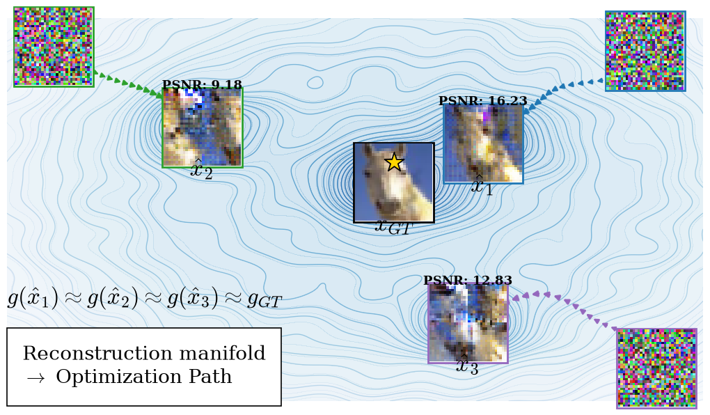
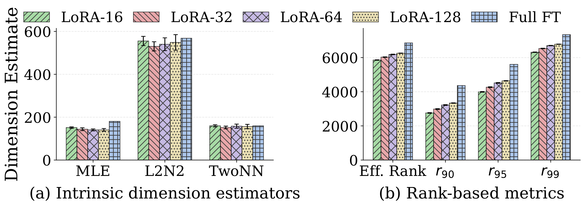
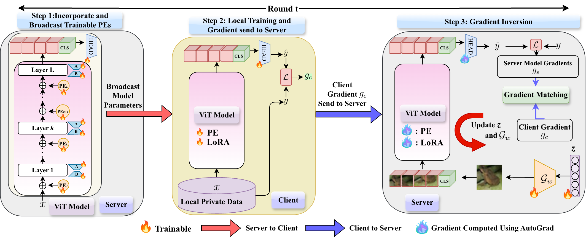
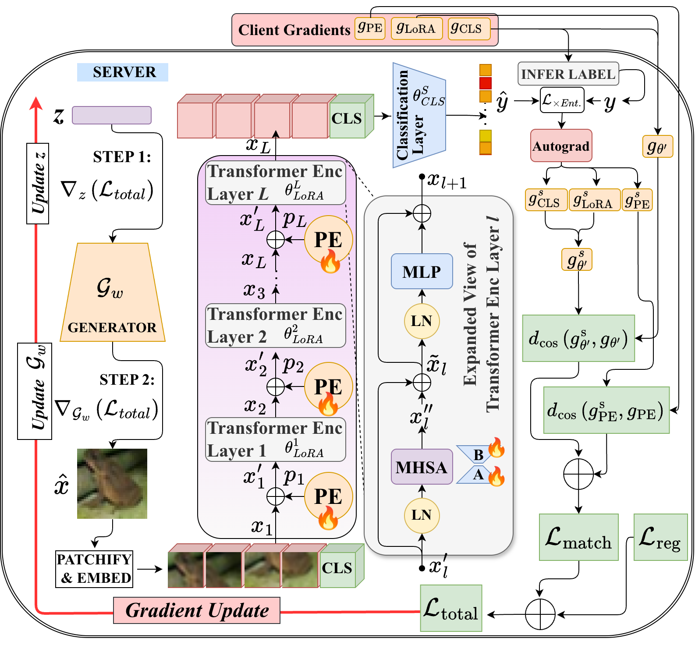
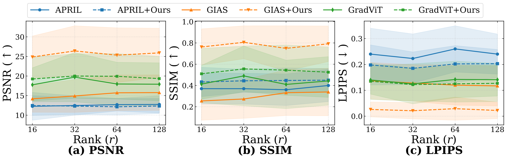
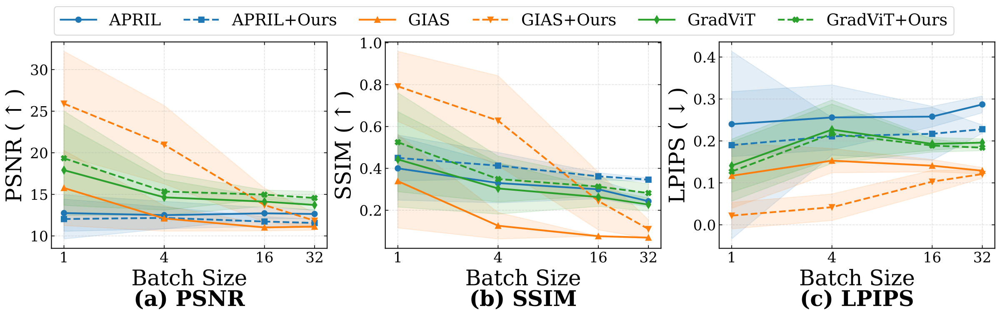
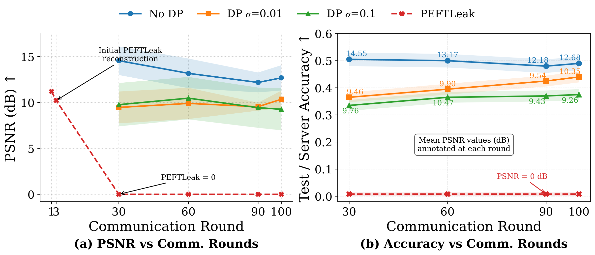

Indian Institute of Science, Bengaluru, India
{ritikbadiya, yashwanthm, siladittyam, anirban}@iisc.ac.in

TL;DR Federated LoRA fine-tuning of ViTs shares only low-rank gradients, but it doesn't stop data leakage. Making positional embeddings trainable in every transformer block gives an honest-but-curious server layer-wise spatial anchors. Combined with a generative prior, these anchors recover private images with high fidelity.
Parameter-efficient fine-tuning (PEFT) has been increasingly adopted to fine-tune pretrained models with low computational cost and is therefore also preferred in the federated learning paradigm to reduce computational and communication overhead. In this work, we investigate the sparsely explored domain of the risk of private data leakage in LoRA-adapted Vision Transformers (ViTs), where low-rank updates weaken the gradient signal available to an honest-but-curious server. We show that reconstruction is limited by two coupled ambiguities: reduced information in LoRA gradients and missing spatial cues from frozen positional embeddings. To address this, we propose a practically plausible spatially anchored generative inversion framework that incorporates trainable positional embeddings into transformer blocks during local fine-tuning. The resulting positional gradients act as layer-wise spatial anchors, while the generative prior keeps reconstructions on a realistic image manifold, reducing twin-data and patch-permutation artifacts. Adding our anchoring to GIAS improves PSNR by 10.14 dB, SSIM by 0.45, and LPIPS by 0.098 on CIFAR-10, with PSNR gains of 7.83 and 11.74 dB on high-resolution CelebA and CARS, respectively. The proposed strategy provides gains at higher batch sizes and in FedAvg settings. These results indicate that LoRA-based PEFT does not, by itself, prevent data leakage in FL and that carefully incorporated positional embeddings can help in exposing private information.
The paper identifies two coupled sources of ambiguity:

The server prescribes a ViT in which a trainable positional embedding $p_l$ is added to the input of every transformer encoder layer (except the first), alongside the LoRA adapters. This doesn't change the clients' local training procedure. The architecture also improves task performance and robustness, which gives clients a genuine reason to adopt it. The overhead is small: GFLOPs increase by only 0.016% for ViT-Small.
The gradients of $p_l$ now carry explicit, layer-wise spatial information. The attacker builds on the generative GIA framework GIAS. It optimizes a latent code $z$ and then the generator $G_\omega$ so that the gradients of the candidate image $\hat{x} = G_\omega(z)$ match the client's gradients, for both the LoRA/classifier parameters and the positional embeddings:


| Metric | APRIL | +Ours | Δ | GradViT | +Ours | Δ | GIAS | +Ours | Δ |
|---|---|---|---|---|---|---|---|---|---|
| PSNR ↑ | 12.75 (2.19) | 12.03 (2.39) | −0.72 | 15.03 (4.68) | 16.62 (4.50) | +1.59 | 15.77 (4.52) | 25.91 (6.29) | +10.14 |
| SSIM ↑ | 0.40 (0.152) | 0.45 (0.11) | +0.05 | 0.397 (0.226) | 0.48 (0.266) | +0.083 | 0.34 (0.221) | 0.79 (0.17) | +0.45 |
| LPIPS ↓ | 0.24 (0.077) | 0.19 (0.224) | −0.05 | 0.124 (0.05) | 0.12 (0.051) | −0.004 | 0.12 (0.075) | 0.022 (0.033) | −0.098 |
Mean over 10 users with three reconstructions each; standard deviation in parentheses. Green marks an improvement.
| Method | CelebA (128×128) | CARS (64×64) | ||||
|---|---|---|---|---|---|---|
| PSNR ↑ | SSIM ↑ | LPIPS ↓ | PSNR ↑ | SSIM ↑ | LPIPS ↓ | |
| GIAS | 11.71 (2.8) | 0.24 (0.10) | 0.31 (0.08) | 9.04 (1.89) | 0.07 (0.08) | 0.36 (0.07) |
| GIAS + Ours | 19.54 (3.72) | 0.585 (0.125) | 0.125 (0.082) | 20.78 (3.17) | 0.72 (0.128) | 0.089 (0.058) |
| Epochs / Batch | APRIL | +Ours | GradViT | +Ours | GIAS | +Ours | Δ GIAS |
|---|---|---|---|---|---|---|---|
| E=1, B=8 | 13.41 | 13.56 | 14.01 | 13.91 | 11.04 | 13.12 | +2.08 |
| E=1, B=4 | 13.34 | 13.79 | 14.09 | 13.86 | 10.82 | 13.21 | +2.39 |
| E=2, B=8 | 13.44 | 13.66 | 14.01 | 13.85 | 10.84 | 13.23 | +2.39 |
| E=2, B=4 | 13.40 | 13.46 | 14.02 | 13.82 | 10.79 | 13.58 | +2.79 |
Each client holds 16 private samples per round, giving E×16/B local steps. The GIAS gain is statistically significant (Welch's t-test, p < 0.05). SSIM and LPIPS are in the paper.



Differential-privacy-style gradient perturbation mitigates the attack, but it costs downstream accuracy. Robustness against stronger adaptive adversaries, and attacks on multi-modal architectures such as vision-language models in heterogeneous federated settings, remain open directions.
PEFT-aware privacy defences should consider not just how many parameters are trainable but what kind of information their gradients expose. In federated ViTs, spatial information matters most.
@article{badiya2026breaking,
title = {Breaking the Privacy Promise: Gradient Inversion Attacks on
Federated Low-Rank Adapted Vision Transformers},
author = {Badiya, Ritik K. and Manna, Siladittya and Sinha, Ashmit and
Mandula, Yashwanth and Chakraborty, Anirban},
journal = {arXiv preprint arXiv:XXXX.XXXXX},
year = {2026}
}